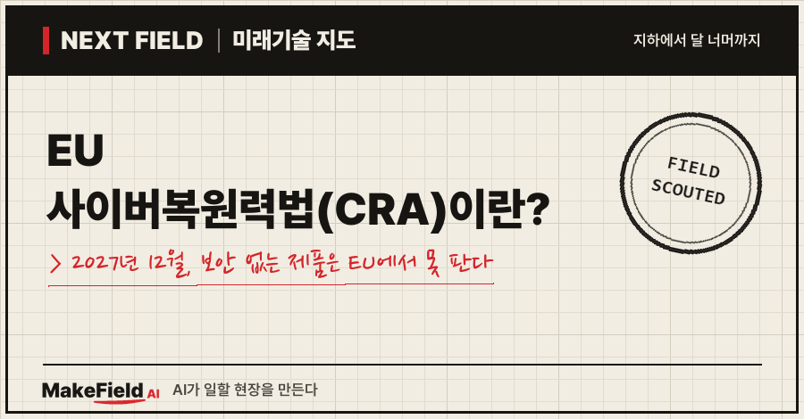
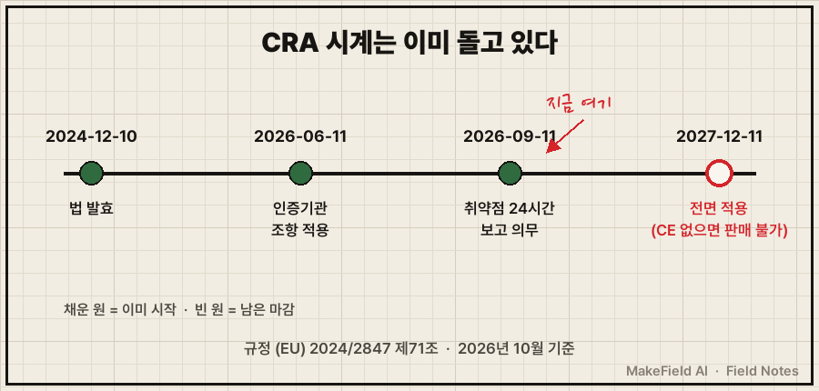
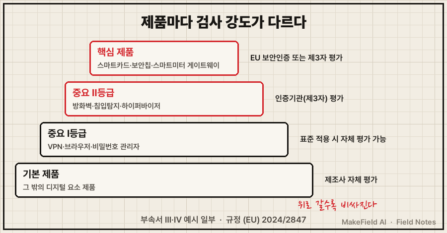
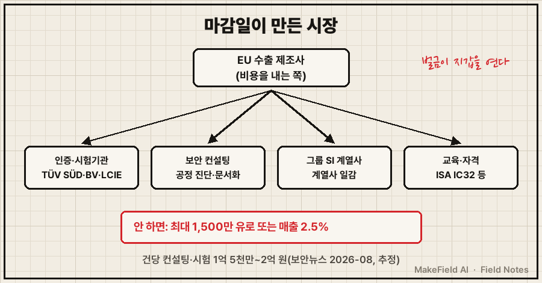

한 줄 요약: EU 사이버복원력법(CRA)은 소프트웨어나 통신 기능이 들어간 제품을 EU에서 팔려면 보안 요건을 지키고 CE 마크를 받도록 한 법으로, 2027년 12월 11일부터 전면 적용되고 이를 어기면 최대 1,500만 유로 또는 전 세계 연매출의 2.5% 중 큰 금액까지 벌금이 매겨집니다(EU 규정 2024/2847, 2024). 취약점 보고 의무는 이미 2026년 9월 11일부터 시작됐어요.
스마트워치, 공유기, 앱, 공장 장비 속 제어 소프트웨어까지 — 인터넷이나 다른 기기와 연결되는 제품이라면 대부분 해당합니다(EU 집행위원회 CRA 안내). 2026년 10월 기준으로 이 법이 무엇이고, 마감일 앞에서 돈이 어디로 흐르는지 쉽게 풀어볼게요.
1. 사이버복원력법(CRA)이란 무엇인가요
사이버복원력법(CRA)이란 '디지털 요소가 들어간 제품'에 보안을 법적 판매 조건으로 붙인 EU 규정이다. 지금까지 전기 안전을 지키지 않은 제품을 EU에서 못 팔았듯, 앞으로는 해킹에 취약한 제품도 못 팔게 된다는 뜻이에요.
💡 CRA(Cyber Resilience Act) — EU 사이버복원력법. '해킹을 당해도 버티고 회복하는 힘'을 제품에 의무로 넣으라는 법.
💡 CE 마크 — EU 안전 기준을 만족했다는 표시. 이게 없으면 EU 시장에 내놓을 수 없다. CRA 이후엔 '보안 합격'도 이 마크 안에 들어간다.
💡 디지털 요소가 들어간 제품 — 소프트웨어가 돌거나 네트워크·다른 기기와 데이터를 주고받는 하드웨어·소프트웨어. 아기 모니터, 스마트워치, 앱, 컴퓨터 프로그램이 예시로 들어가 있다(EU 집행위원회).
제조사가 지켜야 할 핵심은 크게 세 가지예요.
| 의무 | 내용 | 근거 |
|---|---|---|
| 설계부터 보안 | 알려진 취약점 없이 출시, 보안 업데이트 제공 | 규정 부속서 Ⅰ |
| 보안 업데이트 기간 | 원칙적으로 최소 5년(제품 수명이 더 짧으면 예외) | 규정 전문 60항 |
| 취약점 신고 | 실제 악용되는 취약점을 알게 되면 24시간 안에 조기 경보, 72시간 안에 신고 | 규정 제14조 |
💡 취약점 — 해커가 파고들 수 있는 소프트웨어의 틈. 문단속이 안 된 창문 같은 것.
2. 언제부터 적용되나요 — 이미 시계는 돌고 있다
법은 2024년 12월 10일 발효됐고, 보고 의무는 2026년 9월 11일, 나머지 전체 의무는 2027년 12월 11일부터 적용된다(EU 규정 2024/2847 제71조). 단계별로 보면 이래요.

- 2026-06-11: 제품을 심사할 인증기관(지정기관) 관련 조항(제35~51조)이 먼저 적용됐어요.
- 2026-09-11: 실제로 악용되는 취약점과 심각한 보안 사고를 신고하는 의무(제14조)가 시작됐습니다.
- 2027-12-11: 보안 요건·적합성 평가·CE 마크 등 나머지 의무 전체가 적용돼요.
💡 지정기관(Notified Body) — EU가 "이 회사 제품을 대신 검사해도 된다"고 지정한 시험·인증기관.
3. 모든 제품이 똑같이 검사받나요
아니다. 제품을 기본·중요(Ⅰ·Ⅱ등급)·핵심으로 나누고, 위험할수록 외부 검사를 더 엄하게 받는다. 등급별 예시는 규정 부속서 Ⅲ·Ⅳ에 적혀 있어요.
| 등급 | 예시(규정 부속서) | 검사 방식 |
|---|---|---|
| 기본 | 그 밖의 디지털 요소 제품 | 제조사 자체 평가 |
| 중요 Ⅰ등급 | VPN, 브라우저, 비밀번호 관리자, 네트워크 관리 시스템 | 조화표준을 적용하면 자체 평가, 아니면 제3자 평가 |
| 중요 Ⅱ등급 | 방화벽·침입탐지 시스템, 하이퍼바이저, 변조방지 마이크로컨트롤러 | 지정기관(제3자) 평가 |
| 핵심 | 스마트카드·보안칩, 스마트미터 게이트웨이 | EU 보안인증 또는 Ⅱ등급 절차 |
(출처: EU 규정 2024/2847 제32조·부속서 Ⅲ·Ⅳ)
💡 조화표준 — EU가 "이 표준대로 만들면 법을 지킨 것으로 본다"고 관보에 올린 표준. 시험 범위를 알려 주는 공식 답안지 같은 것.

4. 돈의 흐름 — 누가 내고, 누가 버나요
돈을 내는 쪽은 EU에 파는 제조사이고, 받는 쪽은 인증·시험기관, 보안 컨설팅, 그룹 SI 계열사, 교육·자격 사업자다. 벌금이라는 채찍이 이 시장을 만들었어요.
| 구분 | 누가(예시) | 무엇을 하나 |
|---|---|---|
| 내는 쪽 | EU 수출 제조사 | 제품 보안 설계·시험·인증·문서화 비용 부담 |
| 인증·시험 | TÜV SÜD, Bureau Veritas, LCIE | 제3자 평가, IEC 62443 인증 |
| 컨설팅 | Deloitte 등 회계·컨설팅사 | 개발 공정 진단, 표준과의 차이 분석 |
| 그룹 SI | 현대오토에버 | 그룹 계열사 보안 위험평가 |
| 교육·자격 | 국제자동화협회(ISA) | IEC 62443 자격 과정 |
💡 SI 계열사 — 대기업 그룹 안에서 IT·보안 일을 도맡는 회사. 그룹 일감은 대부분 여기로 간다.

숫자로 보면 이렇습니다.
- 벌금 규모: 보안 요건·신고 의무 위반은 최대 1,500만 유로 또는 전 세계 연매출의 2.5% 중 큰 금액, 그 밖의 의무 위반은 1,000만 유로 또는 2%, 당국에 틀린 정보를 내면 500만 유로 또는 1%까지예요(EU 규정 2024/2847 제64조).
- 제품당 비용: 국내 보도에 따르면 CRA 대응 CE 인증에는 최소 5개월 이상, 컨설팅·시험 비용은 건당 1억 5천만~2억 원이 든다고 해요(보안뉴스 2026-08). 기사에 원 출처가 적혀 있지 않아 추정치로 봐야 합니다.
- 자격 과정 가격: 산업 보안 표준 IEC 62443의 기초 자격 과정(ISA IC32)은 회원 1,728달러, 비회원 2,160달러예요(ISA 공식 FAQ).
- 걸린 수출 규모: 같은 기사는 2025년 한국의 대EU 수출이 777억 3천만 달러, 그중 ICT 수출이 134억 2천만 달러라고 인용했습니다(보안뉴스 2026-08, 산업통상자원부 등 무역통계 인용).
💡 IEC 62443 — 공장 자동화·산업 제어 장비의 사이버보안 국제표준 묶음. 그중 4-1편은 '보안을 갖춘 제품 개발 절차'를 정해, 회사의 개발 방식 자체를 인증한다.
※ 위 기업명은 산업 구조를 설명하기 위한 예시입니다. 특정 종목의 매수·매도를 권하는 글이 아닙니다.
5. 누가 먼저 움직이고 있나요
대만 산업용 장비 회사들이 IEC 62443-4-1 인증을 먼저 따고 있고, 한국은 대기업 계열사 위주로 움직이고 있다.
| 회사 | 한 일 | 시점 | 출처 |
|---|---|---|---|
| AAEON(대만, 산업용 컴퓨터) | 2025-06 착수 → 프랑스 LCIE에서 IEC 62443-4-1 인증, CRA 전면 적용 대비 | 2026-06 발표 | AAEON 2026-06 |
| Zyell Solutions(대만, 산업 보안) | Bureau Veritas 인증·Deloitte 자문으로 IEC 62443-4-1 취득 | 2026-07 | Bureau Veritas 2026-07 |
| 현대오토에버(한국) | HD현대건설기계·HD현대인프라코어 사이버보안 위험평가 사업 수주, CRA 대응 지원 | 2025-09 | 뉴스토마토 2025-09 |
AAEON 사례를 보면 착수부터 인증 발표까지 약 1년이 걸렸어요(AAEON 2026-06). 2027년 12월 마감에서 거꾸로 세면, 2026년 말에 시작하는 회사는 여유가 거의 없습니다(추정).
반면 국내 기업 다수는 아직 준비 전이에요. 보안뉴스가 2026년 7월 108명에게 물었더니 59.2%가 "아직 준비하고 있지 않다", 32.4%가 "들어본 적 없다"고 답했습니다(보안뉴스 2026-08, 자체 설문).
6. 한계와 반대 근거 — 마감은 정해졌는데 답안지가 늦다
법의 마감일은 그대로인데, 무엇을 어떻게 시험할지 정하는 조화표준이 아직 관보에 오르지 않았다.
- 표준 지연: 독립 해설 사이트 cyberresilienceact.eu에 따르면 2026년 9월 기준 CRA 조화표준은 단 한 건도 EU 관보에 인용되지 않았어요. 유럽 표준화기구의 초안 제출 기한도 2개월 늦추는 개정안(초안 단계)이 나왔지만, 법의 적용일 자체는 바뀌지 않습니다(cyberresilienceact.eu 2026-09).
- 중소기업 예외는 좁다: 소기업·영세기업은 24시간 조기 경보 기한을 놓친 경우 등 일부 위반에 한해 벌금이 면제돼요. 보안 요건 자체가 면제되는 건 아닙니다(EU 규정 제64조 10항).
- 대기업 시장은 닫혀 있다: 대기업 그룹은 계열 SI가 일감을 가져가는 구조라(뉴스토마토 2025-09), 외부 컨설팅·교육 수요는 계열 SI가 없는 중소·중견 수출 제조사 쪽에 몰릴 가능성이 높아요(추정).
- 정부 지원은 CRA 전용이 아니다: KISA와 지역 기관(예: 인천테크노파크)의 중소기업 정보보호 지원사업은 컨설팅·보안 패키지 공급가의 80%, 최대 980만 원까지 지원하지만(전자신문 2026-08), 제품 인증 비용 1억 원대와는 규모 차이가 큽니다(추정).
자주 묻는 질문
Q. 한국에서만 파는 제품도 CRA를 지켜야 하나요?
CRA는 EU 시장에 내놓는 제품에 적용되는 규정이에요(EU 집행위원회). 다만 국내 완제품 회사에 부품·소프트웨어를 공급하고 그 완제품이 EU로 간다면, 완제품 회사에서 보안 자료를 요구받을 수 있습니다(추정).
Q. 이미 CE 마크를 받은 제품은 괜찮나요?
기존 CE는 전기 안전·전자파 같은 다른 법 기준이에요. 2027년 12월 11일 이후 EU에 새로 내놓는 디지털 요소 제품은 CRA 보안 요건까지 만족해야 CE를 붙일 수 있습니다(EU 규정 2024/2847 제71조).
Q. 오픈소스 소프트웨어도 벌금 대상인가요?
규정은 '오픈소스 소프트웨어 관리 주체(스튜어드)'의 위반에는 벌금을 매기지 않는다고 적었어요(EU 규정 제64조 10항). 그 오픈소스를 제품에 넣어 파는 제조사의 책임은 그대로입니다.
오늘의 용어 정리
- CRA(사이버복원력법) — 디지털 제품에 보안을 판매 조건으로 붙인 EU 규정
- CE 마크 — EU 시장 판매에 필요한 적합 표시
- 디지털 요소가 들어간 제품 — 소프트웨어가 돌거나 통신하는 제품
- 취약점 — 해커가 파고들 수 있는 소프트웨어의 틈
- 지정기관(Notified Body) — EU가 지정한 제3자 시험·인증기관
- 조화표준 — 지키면 법을 지킨 것으로 보는 EU 공인 표준
- IEC 62443 / 4-1 — 산업 제어 보안 국제표준 / 그중 보안 개발 절차 편
- SI 계열사 — 그룹 IT·보안 일을 맡는 회사
지난 Next Field에서는 전기트럭을 채우는 메가와트 충전처럼 '설비'의 변화를 봤다면, 이번엔 법 하나가 제품 개발 방식과 돈의 흐름을 바꾸는 장면이었어요. 여러분 회사 제품 중에 2027년 12월 전에 EU 문을 다시 두드려야 하는 건 몇 개쯤 될까요?
출처
[1] EU 규정 2024/2847(사이버복원력법 원문, 2024) — 시행일(제71조), 벌금(제64조), 취약점 24·72시간 신고(제14조), 등급별 평가(제32조), 중요·핵심 제품 목록(부속서 Ⅲ·Ⅳ), 업데이트 5년(전문 60항)
→ https://eur-lex.europa.eu/eli/reg/2024/2847/oj/eng
[2] EU 집행위원회 CRA 안내 — 발효 2024-12-10, 보고 2026-09-11, 전면 2027-12-11, 적용 대상 제품 예시
→ https://digital-strategy.ec.europa.eu/en/policies/cyber-resilience-act
[3] 보안뉴스(2026-08) — CE 인증 최소 5개월, 컨설팅·시험 건당 1억 5천만~2억 원(원 출처 미표기), 대EU 수출 통계, 기업 설문 108명
→ http://www.boannews.com/news/articleView.html?idxno=144902
[4] 뉴스토마토(2025-09) — 현대오토에버, HD현대건설기계·HD현대인프라코어 사이버보안 위험평가 사업 수주
→ https://newstomato.com/ReadNews.aspx?no=1273742
[5] AAEON(2026-06) — 2025-06 착수, LCIE의 IEC 62443-4-1 인증, CRA 대비
→ https://www.aaeon.com/en/news/detail/aaeon_iec_62443-4-1_certification
[6] Bureau Veritas(2026-07) — Zyell Solutions IEC 62443-4-1 인증, Deloitte 자문
→ https://www.cps.bureauveritas.com/newsroom/bureau-veritas-supports-zyell-solutions-achieving-iec-62443-4-1-certification
[7] ISA 공식 FAQ — IC32 과정 회원 1,728달러·비회원 2,160달러
→ https://www.isa.org/certification/certificate-programs/certificate-programs-faqs
[8] cyberresilienceact.eu(2026-09) — 조화표준 관보 인용 0건, 표준 초안 기한 2개월 연기 개정안(초안)
→ https://www.cyberresilienceact.eu/news/cra-standardisation-deadlines-pushed-back-two-months.html
[9] 전자신문(2026-08) — 인천TP·KISA 중소기업 정보보호 지원사업, 공급가 80%·최대 980만 원
→ https://m.etnews.com/20260803000095